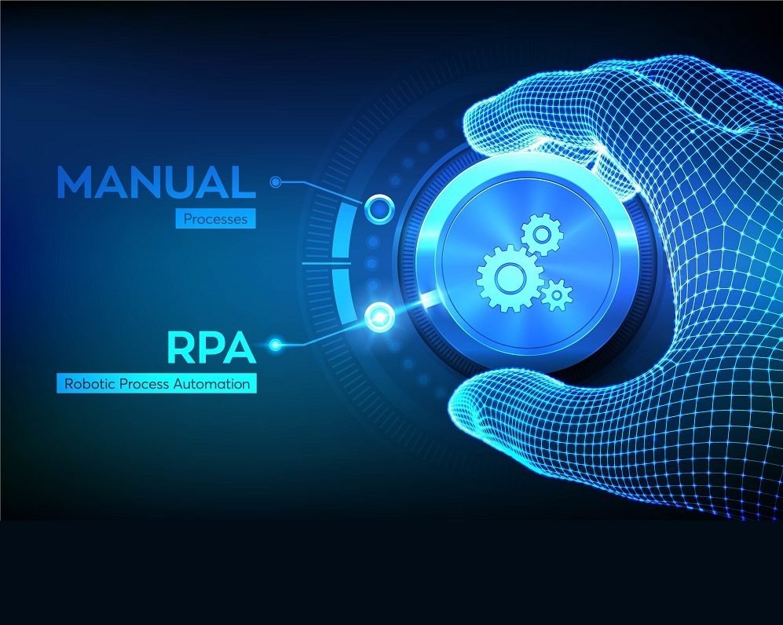

RPA
¿Qué es la automatización robótica de procesos (RPA)?
La automatización robótica de procesos (RPA) es una tecnología de software fácil de usar para todo aquel que quiera automatizar tareas digitales.
Con la RPA, los usuarios de software pueden crear robots de software o “bots” que pueden aprender, imitar y, luego, ejecutar procesos empresariales basados en reglas. La RPA permite a los usuarios crear bots mediante la observación de las acciones digitales de los humanos. Muéstrele a sus bots qué hacer, luego déjelos hacer su trabajo. Los robots de software de la automatización robótica de procesos pueden interactuar con cualquier aplicación o sistema de la misma forma que lo hacen las personas (con la diferencia de que los bots de RPA pueden operar las 24 horas, sin parar, mucho más rápido y con un fiabilidad y precisión del 100 %).

.¿Qué puede hacer la RPA por mí?
Los bots de automatización robótica de procesos tienen el mismo conjunto de habilidades que las personas… y algunas más. Piense en los bots de la RPA como una fuerza de trabajo digital que puede interactuar con cualquier sistema o aplicación. Por ejemplo, los bots pueden copiar y pegar, extraer datos web, hacer cálculos, abrir y mover archivos, analizar correos electrónicos, iniciar sesión en programas, conectarse a API y extraer datos no estructurados. Y dado que los bots se pueden adaptar a cualquier interfaz o flujo de trabajo, no es necesario cambiar los sistemas, aplicaciones o procesos empresariales existentes a fin de realizar la automatización.
Los bots de RPA son fáciles de configurar, usar y compartir. Si sabe grabar un video con su teléfono, podrá configurar los bots de RPA. Es tan intuitivo como pulsar los botones de grabación, reproducción y pausa, y arrastrar y soltar para mover archivos en el trabajo. Los bots de RPA se pueden programar, clonar, personalizar y compartir para ejecutar procesos empresariales en toda la organización.